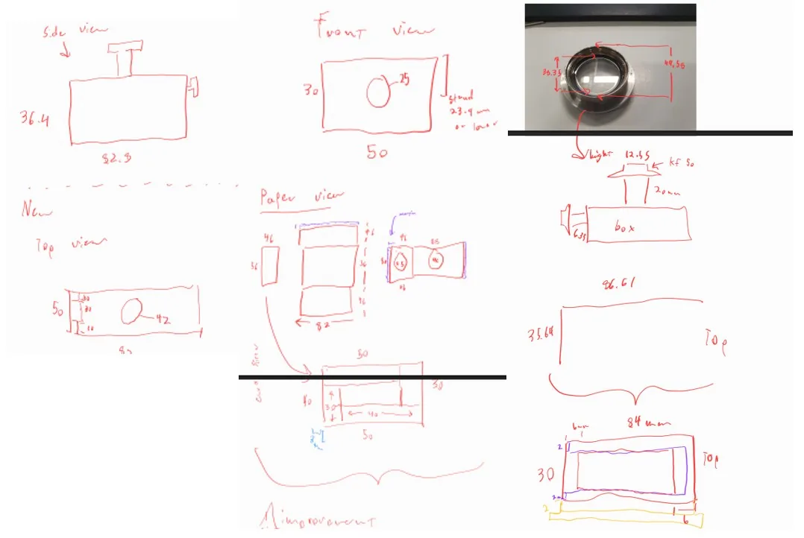
Sketch
I first brainstormed the initial design through sketches on my phone since its a simple rectangular design establishing the chamber shape, flange position and overall sample layout.
I am a robotics engineering student.
This is a webpage to help describe some of my more published work in greater detail.
View ResumeProblem: Existing swarm algorithms only achieved 40% target tracking reliability.
Solution: Developed a three-state adaptive algorithm achieving 94.41% line-of-sight persistence.
View Project →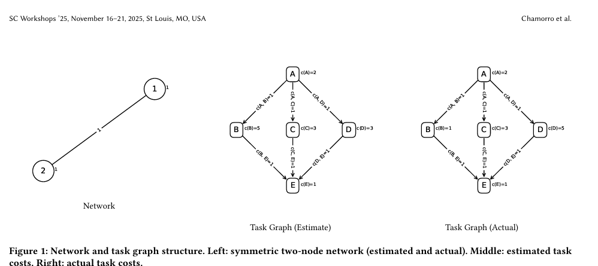
Problem: Traditional scheduling algorithms assume known task durations, but real-world systems face uncertainty.
Solution: Adapted classic heuristics (HEFT, CPoP) for online execution with real-time recalibration.
View Project →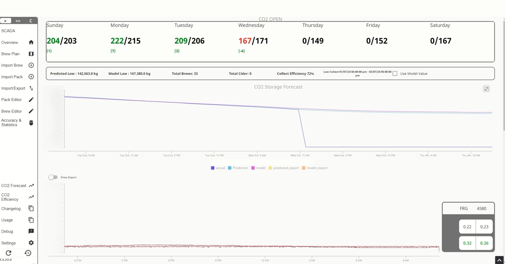
Problem: Excel-based CO2 forecasting delivered only 70% accuracy, requiring constant intervention.
Solution: Built an Ignition SCADA system with 95% hourly accuracy, selected as ICC 2024 finalist.
View Project →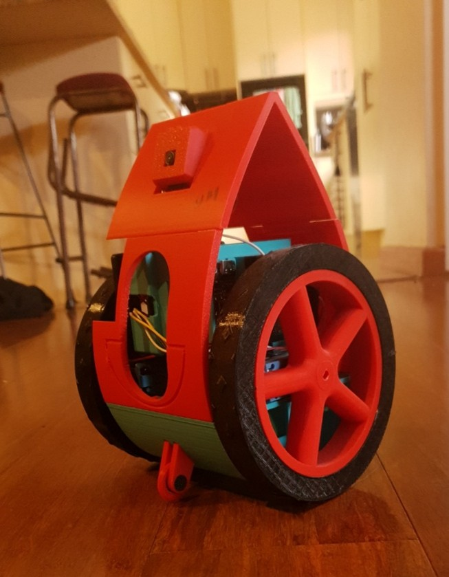
Problem: Connect local voice control, off-board computer vision, and physical differential-drive hardware across two computers.
Solution: Built a modular ROS 2 rover with Vosk speech recognition, YOLO person detection, and a Raspberry Pi motor-control stack.
View Project →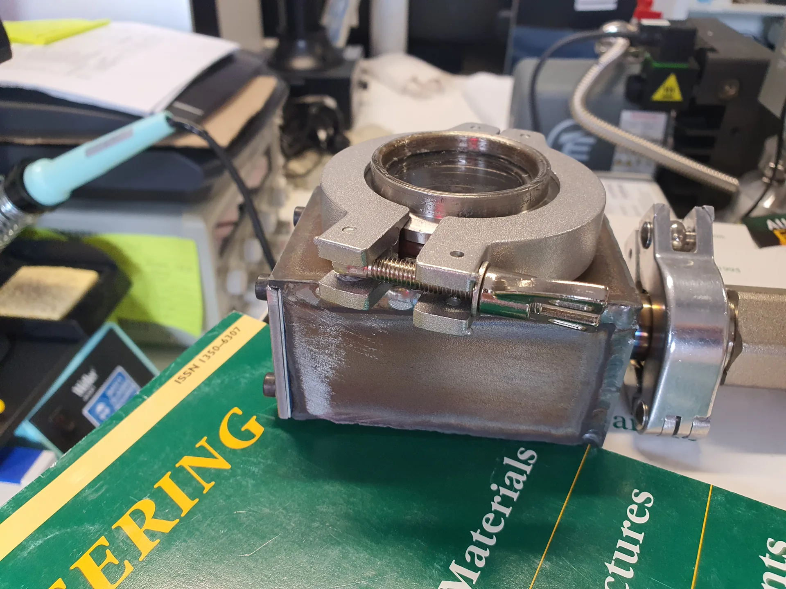
Problem: Transport a dust-covered glass sample under vacuum for laser-cleaning experiments.
Solution: Designed, prototyped, fabricated and pump-down tested a compact chamber for the Space Robotics Lab.
View Project →Problem: Automate temperature ramps and holds across the chamber's heaters and LN₂ cooling system.
Solution: Validated the architecture on a bench prototype, then developed the HMI, LN₂ control, dedicated PCB and model-based control logic.
View Project →Competition projects
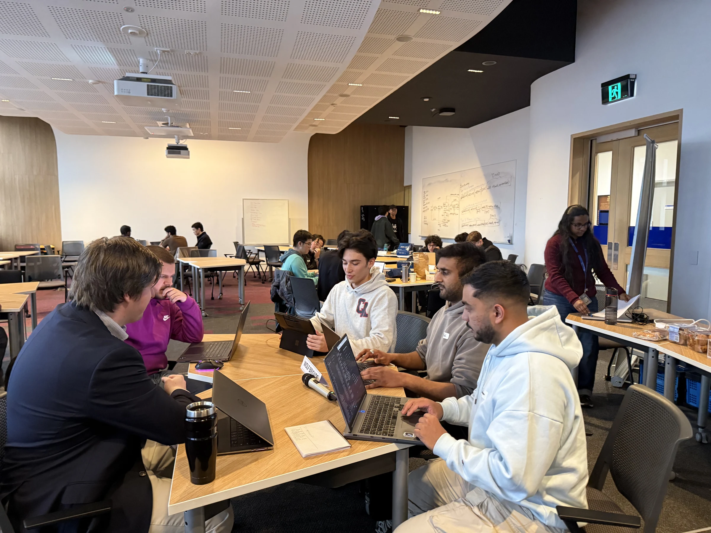
We built a processor from first principles, then specialised its datapath and instruction set for fixed-point PID control.
View Hackathon Project →Robotics Research · Autonomous Systems
This problem is critical in applications like law enforcement pursuing a suspect vehicle, or disaster response teams tracking a drifting vessel, where persistent tracking is paramount.
The best Line-of-Sight score from existing research was only 40%. At this reliability, the swarm loses sight of the target more than half the time. For real-world applications like search and rescue or surveillance, this simply isn't usable. A target that disappears 60% of the time isn't being tracked.
That's why we set out to develop a solution capable of achieving 90%+ LOS, a threshold where persistent tracking becomes viable for practical deployment.
Core Hypothesis: No single behaviour can achieve 90% LOS. We need an adaptive solution.
Created a 2D simulation optimization framework in Python, allowing rapid prototyping and testing of swarm behaviours.
Explored various tracking and searching algorithms for the swarm, drawing from existing research and novel approaches.
Observed weaknesses in the simulation and designed entirely new, purpose-built behaviours to fill those strategic gaps.
The breakthrough came from a three-state solution, with distinct algorithms for when an agent is in front, behind, or has no memory of the target:
Prediction worked well all-round, but we observed that a more aggressive predict multiplier could be used when in front. Standard prediction sometimes caused agents to miss the target's path. The aggressive variant kept agents positioned on the target's trajectory.
Testing showed prediction was the best-performing behaviour when behind the target. Agents use a predictive multiplier to anticipate where the target will be, rather than chasing where it was.
When an agent loses sight of the target, separation kicks in using inverse square repulsion. This forces agents to spread equally far apart across the map, maximizing sensor coverage for reacquisition.
By moving from static behaviours to dynamic role allocation, we demonstrated that in resource-constrained, decentralized systems, adaptability is more powerful than raw speed.
SC '25 Workshops Publication · SAGA Framework
During my exchange semester at Loyola Marymount University in Los Angeles, I was invited by Professor Jared Coleman to join his research team. Even after returning home to Australia after the exchange I still work remotely with Professor Jared and his team helping where I can.
The research we do focuses on the question, "How do you schedule tasks on a supercomputer when you don't know how long they will take?"
Specifically the research linked below was focused on creating an automated framework for the SAGA Python library that adapts offline heuristics (like HEFT and CPoP) for online execution. By simulating a feedback loop that re-calibrates the schedule as tasks finish, we enabled static algorithms to handle runtime uncertainty dynamically.
Task graph visualization from our publication showing computational dependencies and scheduling complexity
Task scheduling aims to assign computational tasks to machines to minimize execution time while respecting dependencies. Traditional algorithms assume known task durations, but real-world systems face uncertainty from hardware variations, network conditions and workload unpredictability. Our research adapts classic scheduling heuristics to handle this uncertainty in real-time, making offline algorithms work effectively in dynamic, online environments.
Inductive Automation Conference 2024 Finalist
During my university placement at Carlton & United Breweries, I was given the opportunity to complete and deploy a CO2 prediction model for the brewery.
The project utilised Inductive Automation's Ignition SCADA platform to build a predictive system that forecasts CO2 storage levels hour-by-hour, replacing an unreliable Excel-based solution.
The Ignition-based CO2 prediction model interface showing real-time storage levels and forecasting
This work was submitted to the Ignition Community Conference's annual Discover Gallery, where it was selected as a finalist among the best projects of the year.
Raspberry Pi · Offline Speech Recognition · Off-board Computer Vision
I built this rover as an end-to-end exploration of how speech, computer vision, and physical control can work together in ROS 2. The Raspberry Pi handled the camera, offline Vosk speech recognition, command parsing, control arbitration, and motor-facing nodes. A Windows PC handled GPU-based YOLO person detection and returned normalised bounding-box data to the rover over the ROS 2 network.
The completed rover from the front and rear.
Final rover — front view
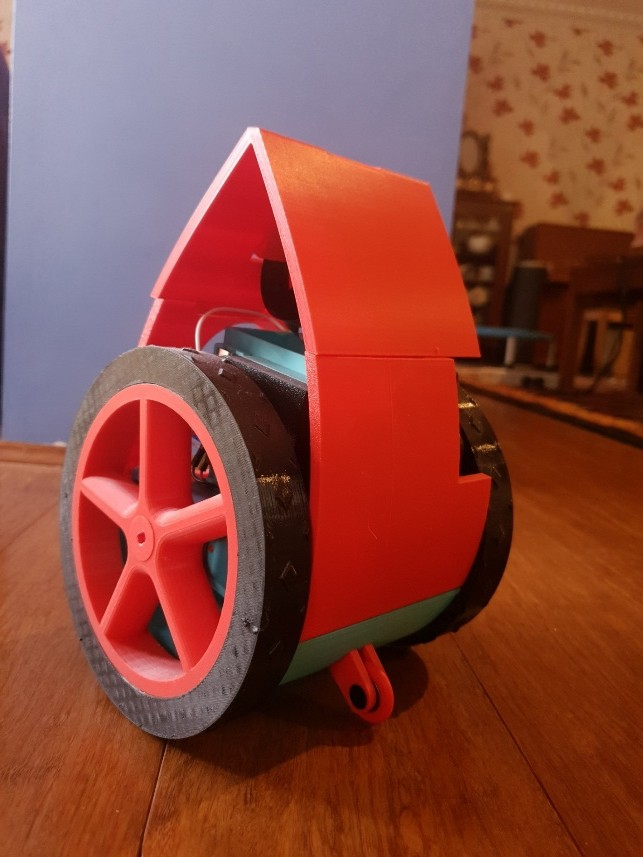
Final rover — rear view
| Phase | Goal |
|---|---|
| A–C | Core system: Pi OS, ROS 2 Iron built from source, and camera topic verified. |
| D | Voice Interface: On-board offline speech recognition (Vosk). |
| E | Simulation: Voice-to-motion logic and virtual drive kinematics. |
| F | Vision: off-board GPU person detection and ROS 2 data exchange over Wi-Fi. |
| G | Electronics: Cytron motor-driver integration, PWM control, and bench testing. |
| Chassis | Physical design: final 3D-printed shell, wheels, electronics mounting, and rear caster assembled. |
Concept design and electronics integration stages.
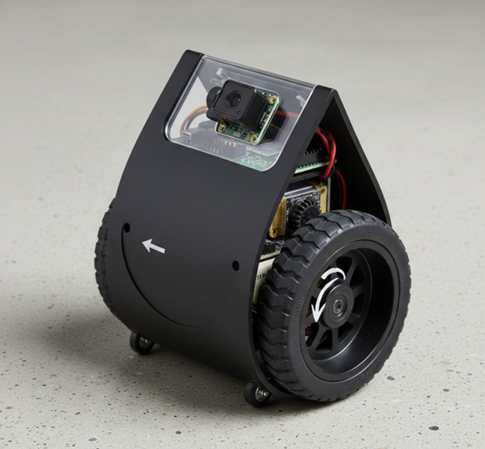
Early concept design
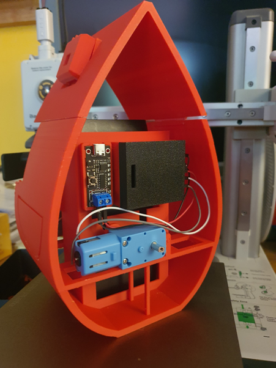
Electronics integration
Space Robotics Lab · Mechanical Design
Built for the Space Robotics Lab, this compact vacuum chamber was built so that we could carry a dust-covered glass sample to a laser lab for experiments into whether laser energy can remove dust from a surface under vacuum.
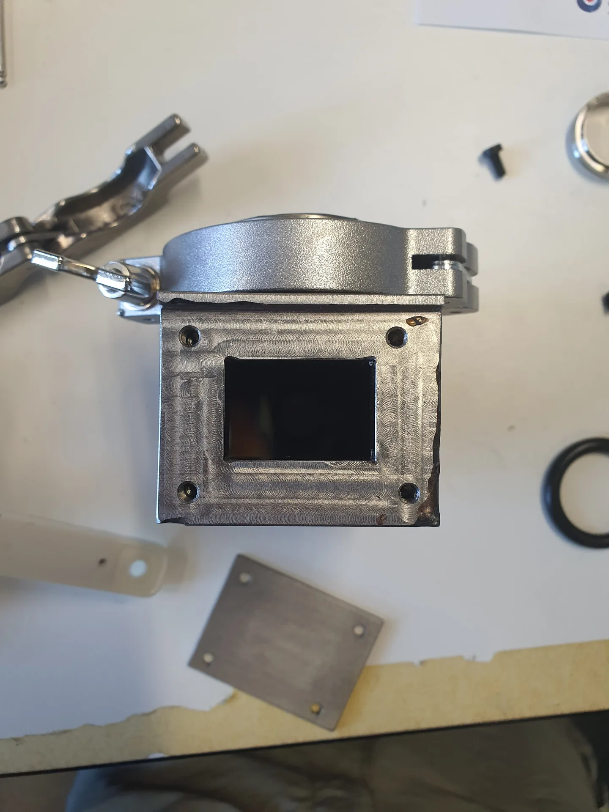
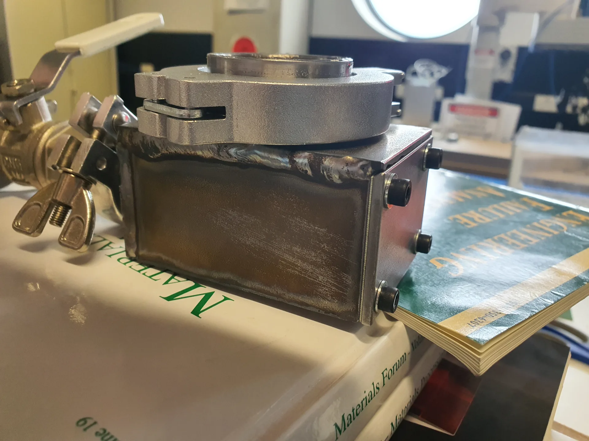
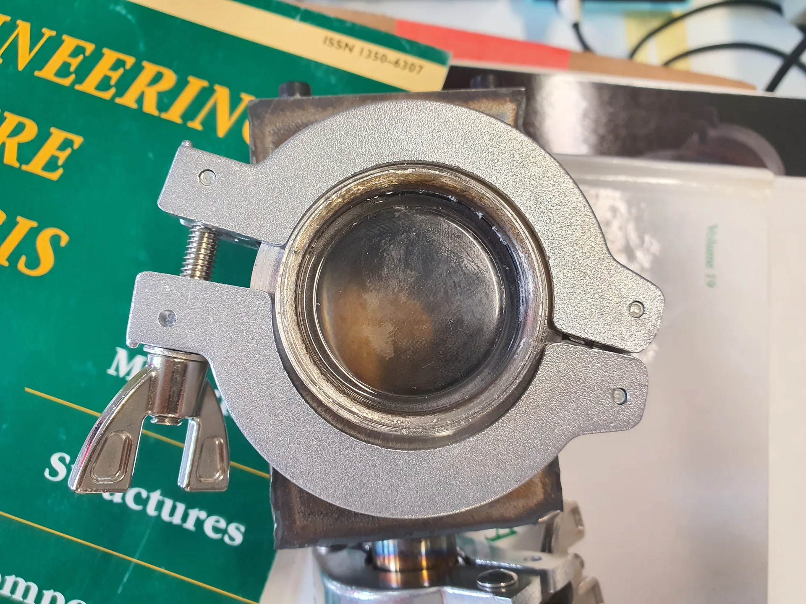
Engineering journey
These are the five steps that I took for the design workflow of this vacuum chamber.

I first brainstormed the initial design through sketches on my phone since its a simple rectangular design establishing the chamber shape, flange position and overall sample layout.
I then moved the concept into CAD to resolve the assembly, dimensions and clearances between components.
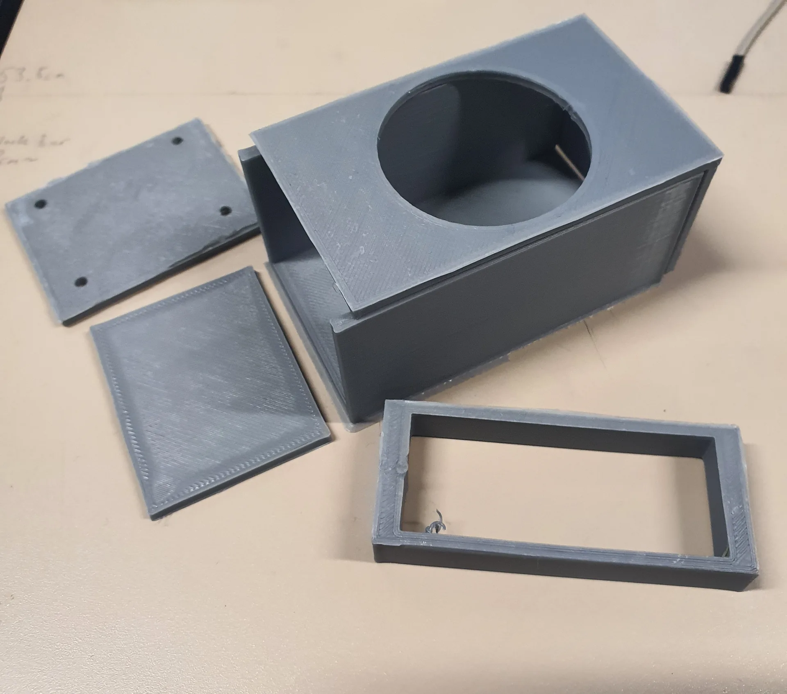
After Cadding up I made a prototype (3D-printed model started off with a paper mache) The main purpose was so that I could reason with the workshop how to manufacture the design so that I could sensecheck it.
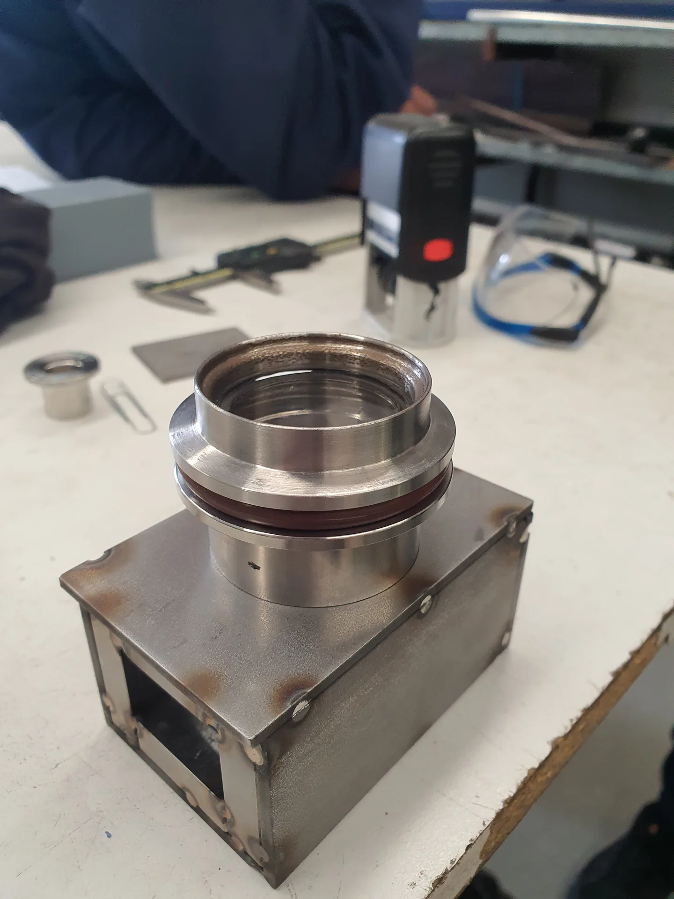
The design was reviewed with the workshop, then manufactured and assembled in metal.
The completed assembly was connected to the vacuum system and tested ahead of the laser experiment.
Iteration under test
The completed chamber and glass-flange assembly ended up slightly taller than intended, revealing a stack-up mistake on my end in the original design. Part of the glass flange was machined down to recover the height but the change affected the flange and introduced a vacuum leak. A water-pressure test located the leaking area and after discussion with the workshop, resin was applied to repair the seal. The recovery reinforced the importance of checking the complete flange stack-up before fabrication and validating changes before machining finished components.
After the local leak was repaired, pump-down testing exposed a separate system-level limitation. We wanted to simulate the lunar environment for that testing at approximately 10−3 mbar is "good enough" for research purposes but the overall system could only get to 10−1 mbar without continuous pumping. Individual parts were investigated finding that the entire system couldn't stay at the desired pressure, The practical conclusion was to move the pump to the laser laboratory and run it during the experiment. This broader limitation was distinct from the repaired flange leak.
Methods and tools
Space Robotics Lab · Automation & Control
I helped turn an existing thermal vacuum chamber with heat shrouds and LN₂ cooling into an automated system. An operator could set a target temperature while the controller coordinated telemetry, heaters and cooling through a desktop HMI.
From manual plant to integrated control
The new architecture connected the chamber's thermocouples to ESP32-based heater and LN₂ control, with a desktop HMI for monitoring and operator commands.
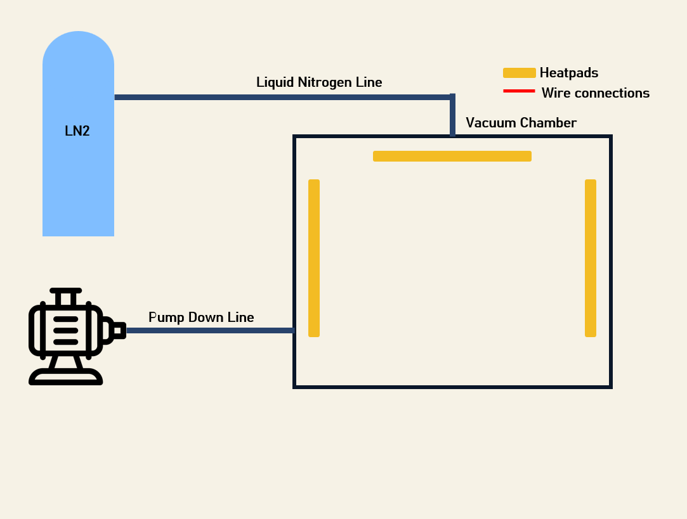
What we started with
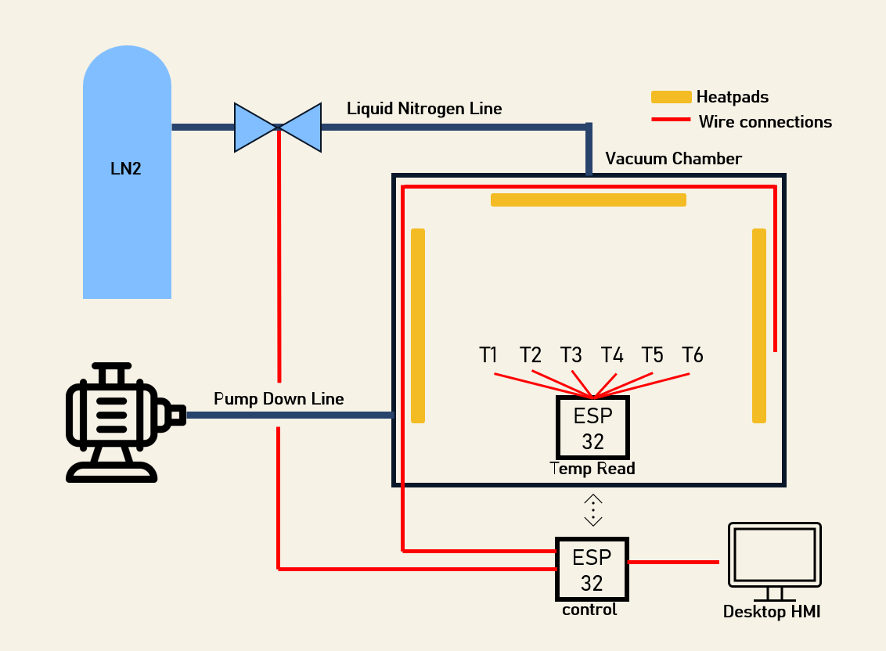
What I was tasked with implementing
Functional prototype → engineered final hardware
The temporary wiring was intentional: it let me prove temperature acquisition, switching and integration before committing the design to a dedicated PCB.


Temporary electronics validated the control architecture while I wired the heat shroud, routed internal thermocouples and prepared an ESP32-based system to read temperatures inside the chamber.
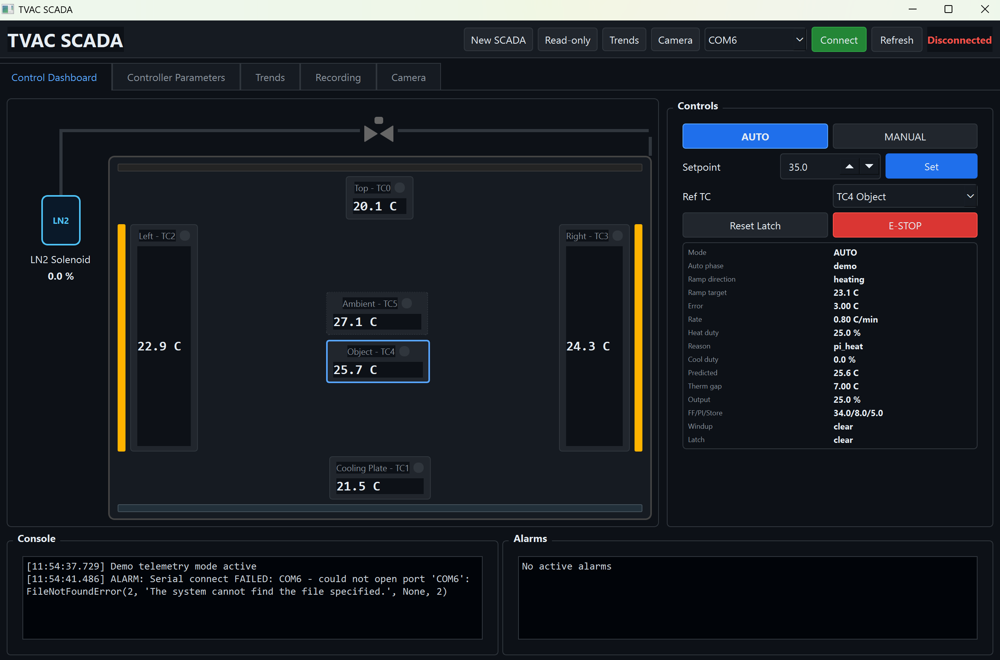
The interface displayed telemetry, it started as a browser-based HTML HMI to a native desktop HMI built with PySide6. as multiple issues came up with the previous solution.


I worked through the legacy fitting interfaces (worked with BSP/NPT and SAE), assembled the electrically controlled solenoid into the plumbing and tested it under real LN₂ conditions for approximately nine hours.
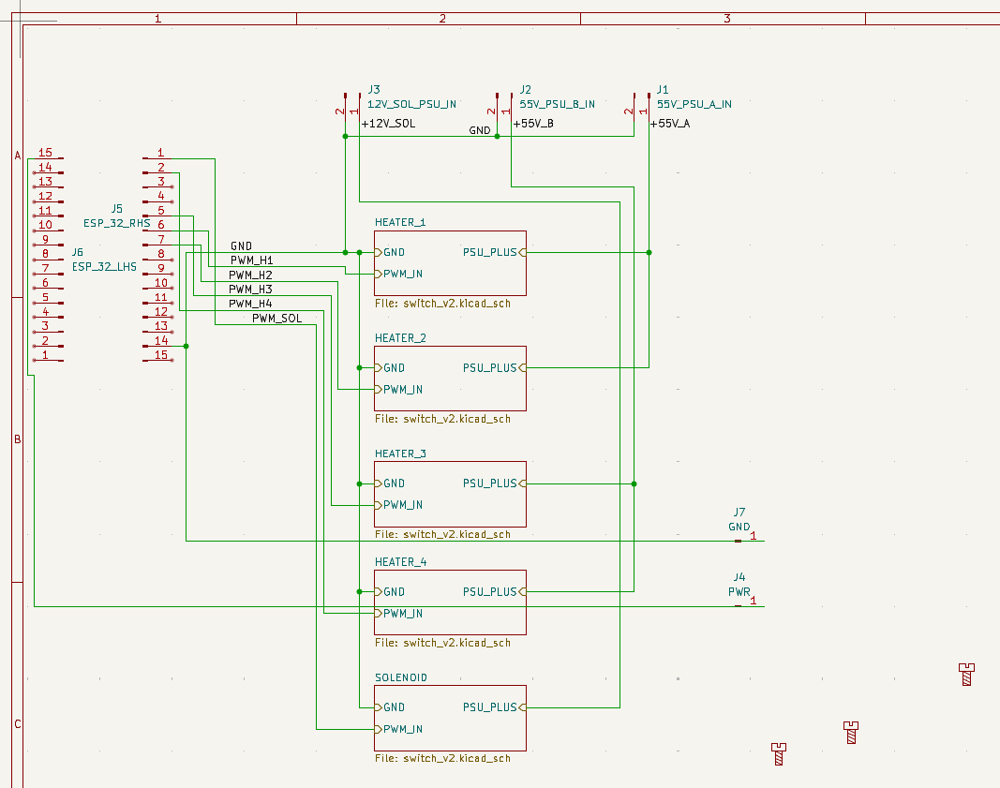
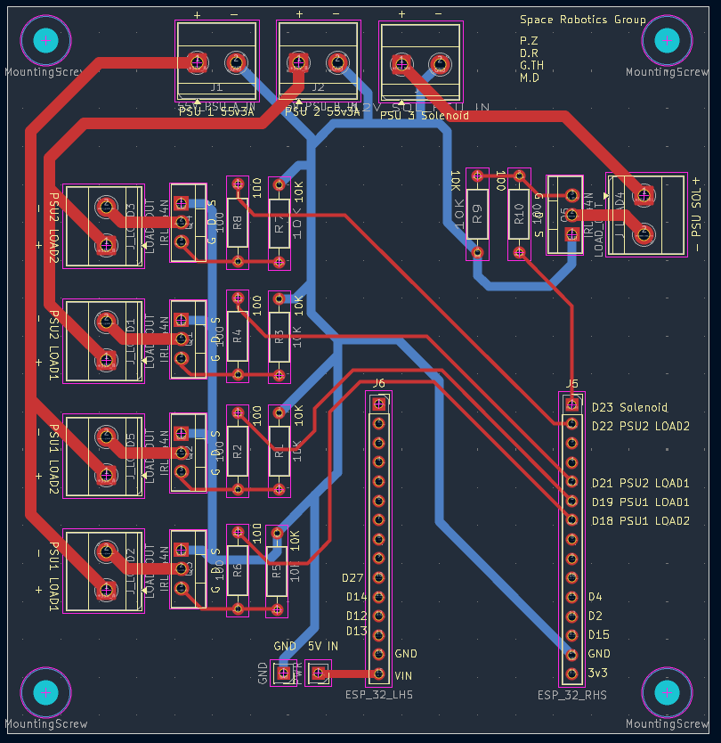
The proven temporary circuit became a dedicated ESP32 PCB with power distribution and MOSFET switching for the heaters and solenoid.


Phase 2 converted the working bench prototype into a cleaner, serviceable controller built around the dedicated PCB.

The completed Phase 2 valve assembly packaged the electrically controlled solenoid into the existing LN₂ plumbing. And also made permenant wire solutions for the heaters and other electronics (not seen)
Thermal testing → model-based logic
The project aimed for a 1–2°C/min ramp and ±2°C hold, chosen to follow the NASA thermal-vacuum testing specifications we were working from. The first physical controller reached approximately the ramp-rate target but held around ±5°C. I then developed a model-based improvement from recorded data, although I could not physically validate that final controller before leaving the project.
Open-loop heating trials at different starting temperatures exposed the chamber's lag and showed why fixed heater cut-off temperatures could not provide reliable control.
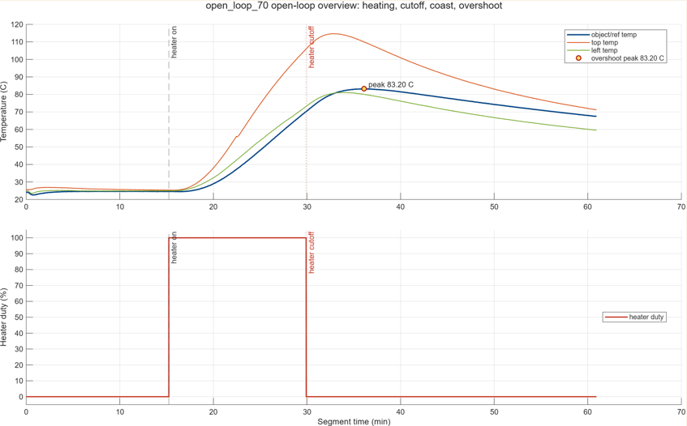
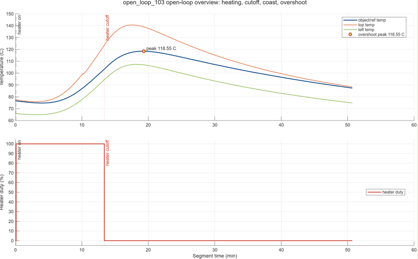
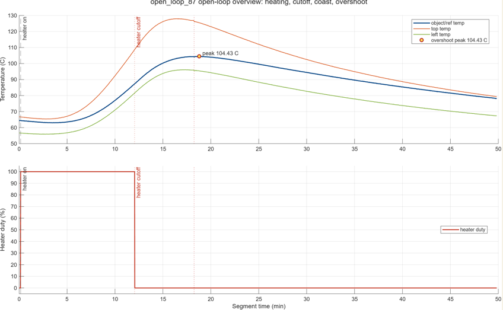
The early physical controller managed the ramp using feedback and temperature prediction, but still varied by about ±5°C around the final setpoint.
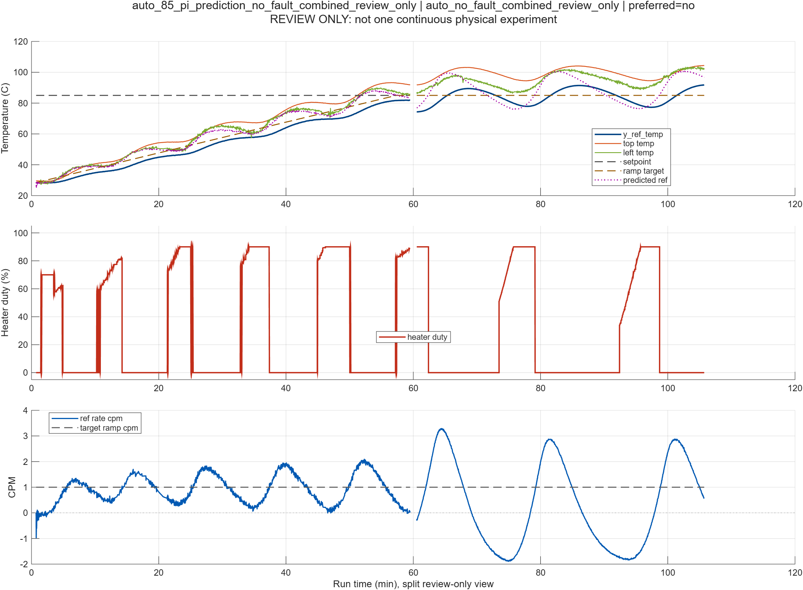
Experimental data produced a four-pole transfer-function model with approximately 95% fit on the cleaner training data.
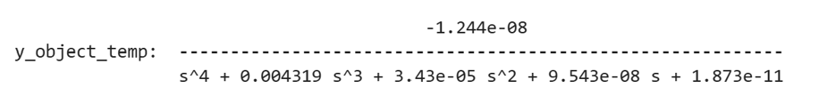
The identified model was used to tune separate logic toward the project's NASA-aligned aims: a 1–2°C/min ramp and ±2°C hold.
Validation status: developed from recorded TVAC data, but not physically validated before the project concluded because other chamber hardware was still being worked on.
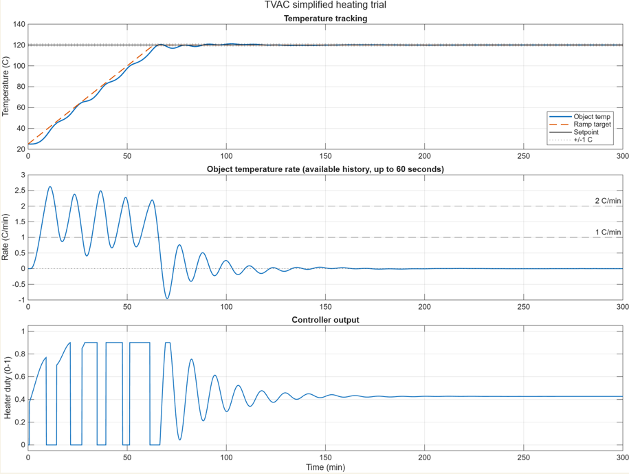
Code and engineering handover
The final PCB design, ESP32 firmware and Windows HMI for the thermal vacuum chamber control system.
View on GitHub MATLAB · Modelling · TuningA self-contained handover workflow for importing HMI recordings, fitting and validating heating and cooling models, tuning the firmware-style controller offline and running synthetic trials.
View on GitHubMethods and tools
Analog Devices MCU Hackathon · Two days · 1st Place
Goal of the hackathon was to design and build a custom CPU from the ground up, from its instruction set and datapath to its Verilog implementation, simulation and FPGA synthesis.
Once we understood the basics of CPU architecture, we developed the narrative of designing it for PID control.
Team members: Utkrisht Jain · Gabriel Twigg-Ho · Mohammed Ibrahim

Build & results
Before this hackathon, we could write software, but the internal operation of a processor still felt like a black box. We had never followed a hexadecimal instruction from instruction memory, through the decoder and register file, into the ALU or understood how load and store operations connect a processor to data memory.
During the challenge, we learned those concepts by building the processor ourselves. Starting with a basic arithmetic CPU, we gradually implemented its datapath, instruction decoder, registers, memory interfaces and assembler.
Once the architecture made sense, we adapted it for closed-loop control. Signed fixed-point scaling, comparison and conditional branching allowed the processor to calculate proportional, integral and derivative terms, make runtime decisions and constrain actuator outputs.
We compared six CPU variants through functional simulation and FPGA synthesis, validated 1,000 PID updates and met the 50 MHz timing constraint.
The main problem for us, and this is also mentioned throughout the video below, was that PID requires fractional numbers, and implementing that in a CPU that fundamentally only works with binary integers can initially be challenging. It turns out the solution is quite ingenious: scale all the numbers up by a power of two so the fractional values can be represented as integers, perform the multiplication, and then scale the result back down, making sure that the hardcoded ISA we had knew about this scaling.
Ultimately, we built a CPU that could run a 1,000-iteration PID loop. Nothing more.
Ten-minute final presentation
Our final presentation explains the processor architecture, PID specific extensions, validation workflow and the variants we compared, this was our final submission for this Hackathon.